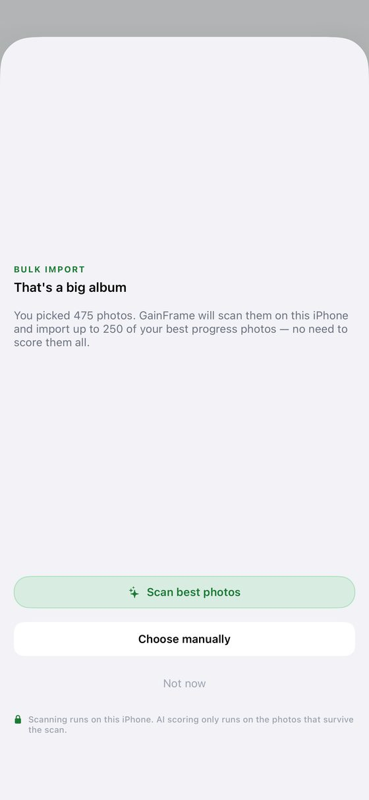
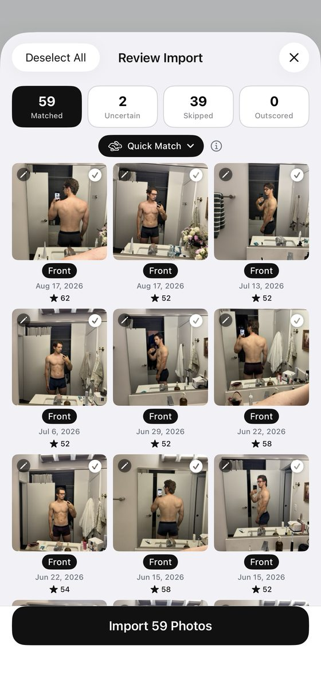
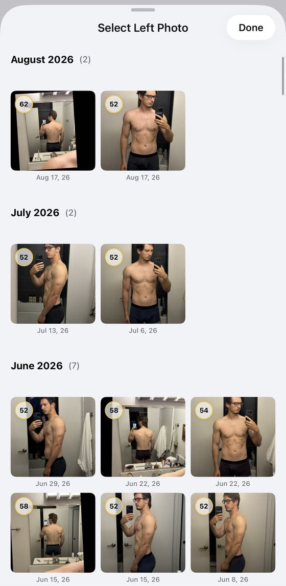
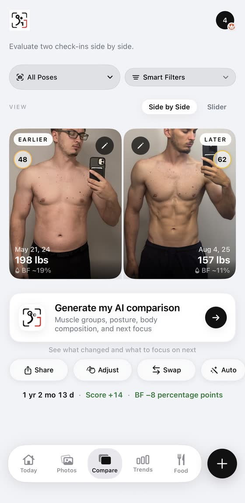
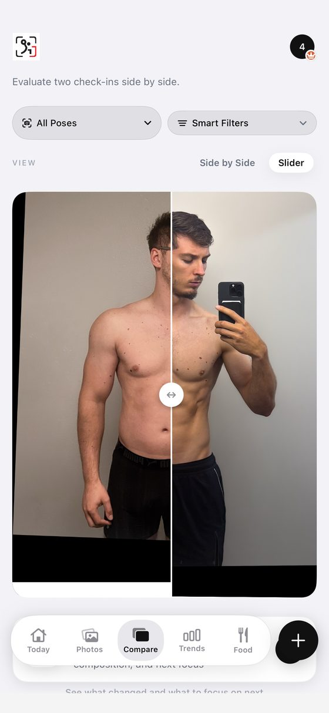

Blog · Best progress photo apps · [DRAFT: noindex, not published; publish date TBD] · Mark Stepchin
GainFrame review: the most polished app I tested, and the slowest with a real library
Full disclosure: I build Recomp, a free progress photo app that competes with GainFrame. Recomp has no in-app purchases, and no app pays me [CONFIRM: no ads, affiliate links or partner deals]. This review expands the GainFrame entry in my roundup of the best progress photo apps, and every app went through the same test kit and scorecard.
[TODO: Mark's Oct 4 notes say GainFrame has a full-screen view and maybe two other compare screens he hasn't fully checked. Re-check them before scoring alignment and comparison.]
What GainFrame costs
GainFrame is free to download, with five paid plans. It sells $3.99 a week, $5.99 or $9.99 a month, and $39.99 or $49.99 a year. [TODO: which features the free tier keeps, and which plan Mark bought for the test]
Importing a big library
GainFrame took my 475-photo album in one pick but imports at most 250, the most recent ones. The import took about 15 minutes. [CONFIRM: whether all 250 imported; the review screen showed "Import 59 Photos"] [TODO: Mark recalls about 30 minutes to process 450 photos; the draft says about 15 minutes for the 475-photo album. Settle which run each number came from.]
The loading states during import are the best in the category. I'm using them as the reference for Recomp's bulk import. An on-device scan picks your "best" photos and labels each pose, and it labeled one of my back shots "Front."


Picking two photos to compare
Choosing the before or after photo opens a picker with thumbnails about a third of the screen tall. Finding one week among hundreds means long scrolling, month by month. With a real library I couldn't find a specific photo. Every app's picker is awkward to some degree, and GainFrame's is the one that hurt most at scale.

Comparing two dates
The compare screen puts photo comparison second. Photos sit in small boxes, and AI labels cover them. It offers a standard slider and side by side, with weight, a body-fat estimate and a score next to each photo. Auto and Adjust buttons sit in compare, and black borders on the slider suggest it auto-aligns the pair. [CONFIRM: whether Auto aligns the pair, and how well]


Design and speed
Design is GainFrame's strength, and performance is its weakness. I proposed a 4 out of 5 for design: high polish, with icons and layout that look great. I proposed a 2 for performance: past 250 photos, both import and compare bogged down. You can see the developer put a lot of effort in.
AI body-fat estimates and scores
GainFrame estimates body fat with AI, which I don't grade. Its listing also has FFMI and muscle scores, XP and trophies, streaks, an opt-in leaderboard, share cards and a widget. AI scores are noisy across the category: in Rate My Physique, one photo I posted twice scored 9.6, then 8.5. [TODO: link the AI body-fat accuracy article (REC-80, PR #19) once it's live.]
Five written App Store reviews praise GainFrame's AI analysis, and two of them name body fat. They come from my study of 732 App Store reviews. A cluster of warm 5-star reviews landed Mar 21 to 23, 2026, two weeks after launch, and may come from its tester group. [CONFIRM: tester-group inference is unverified]
Where your photos live
Photos stay on your iPhone, and core features need no account. AI features send photos to Google's Gemini, which discards them, per GainFrame's policy. The App Store label includes "Data Used to Track You" and "Data Linked to You." The policy says there are no ads.
GainFrame has no backup of its own. Deleting the app removes your photos, per its policy. It connects to Apple Health and Hevy. [TODO: delete-and-restore test with an iPhone backup]
Scores so far
| Score (1 to 5) | GainFrame | Status |
|---|---|---|
| Capture and tracking | 3 | Proposed; camera capture untested |
| Alignment | TBD | Re-check Auto and Adjust |
| Comparison | 2 | Proposed |
| Design | 4 | Proposed |
| Performance | 2 | Proposed |
| Privacy | TBD | |
| Backup | TBD | |
| Import (bonus, outside the total) | TBD | |
| Total out of 35 | TBD | 11 from the four proposed |
[CONFIRM: rescore on the v8 rubric or the Oct 4 measured tiers; v7 provisional grade was A, 19/25. Beginner all-in-one label: confirm fit.]
The numbers
Every app's numbers sit side by side, with test dates, in my test data.
| Field | Value |
|---|---|
| Full name | GainFrame: Gym Progress Photos (Michael Rode) |
| Rating | 4.89 from 65 US ratings (Oct 3, 2026) |
| Written reviews, Jul 2 to Oct 2, 2026 | 5 (US feed) |
| First released | Mar 8, 2026 [CONFIRM: same date as Thumbstone; check for a copy error] |
| Last updated | Oct 3, 2026 (version 3.24); Sep 26, 2026 (3.23) on the Oct 2 fetch |
| Version tested | 3.24 [CONFIRM] |
| Requires | iOS 17.0+ [CONFIRM Android] |
| App Store | GainFrame on the App Store |
[TODO: the roundup says the apps launched since 2024 have "at most one recent written review" and that Lasmit's 5 are "the most here." GainFrame also had 5 in the same window. It was out of scope when that line was written; fix one or the other.]
What to use instead
If GainFrame's import cap or picker is the problem, I compare the alternatives by job in GainFrame alternatives. For automatic alignment, see my Thumbstone review. For a one-time price and iCloud sync, see Fit-Stitch.
What I haven't tested yet
I still need to check GainFrame's full-screen view, its other compare screens, its camera, and a delete-and-restore. Those decide the alignment, privacy and backup scores. If you use GainFrame with a big library and see something different, email me at support@progressphotos.app.
See the progress buried in your camera roll
Compare progress photos on a before-and-after timeline, scroll to any date instantly, and align photos on the fly. Recomp never uploads your photos. It sends anonymous usage analytics and crash reports, with no account and no tracking.